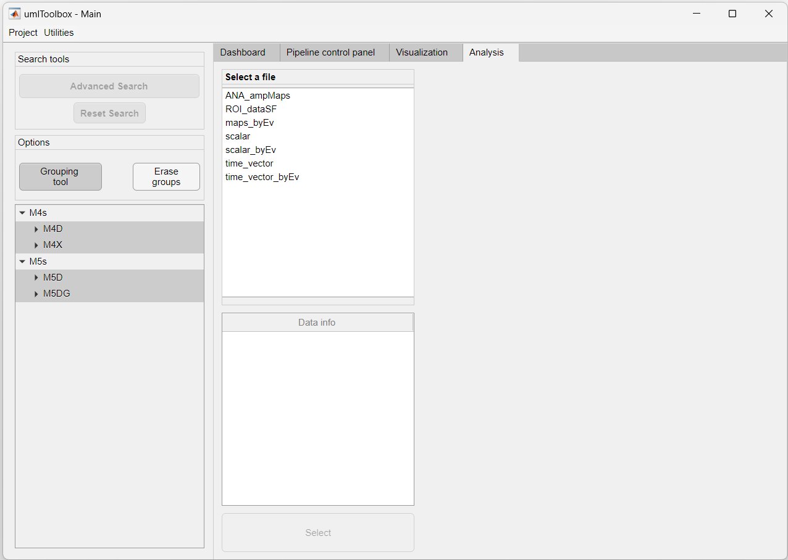

Up to this point, you learned how to import, preprocess, extract and aggregate data from imaging datasets separated by experimental groups. In this tutorial, we show how to visualize this data. The visualization of grouped data allows one to perform the exploratory data analysis of a given project.
In this tutorial, we will visualize the data used in the previous section about ROI data extraction and aggregation. In brief, it consists of four resting state and four visual stimulation experiments performed in four mice divided into two experimental groups.
In this section, we will visualize the response of visual areas to drifting gratings. The data consists of the average response amplitudes to 10 repetitions of the visual stimulus resulting in one value (scalar) per ROI (i.e., ROI response amplitude values). Below is a summary of the data processing workflow for one recording:

1. First open your project file in the main GUI. In Matlab's command window, type:
umIToolbox('C:/FOLDER/projectfile.mat');
2. In the Analysis tab, use the Grouping tool option to create or load the grouped data (for more information, revisit our tutorial on how to create groups). Here, we will group all drifting grating recordings into two groups: M4s and M5s:
3. Now, highlight all recordings in the object tree and select the file named ROI_dataSF containing the ROI response amplitude values.

4. Once the .mat file is selected, a list of ROI names will appear on the Select observation(s) list box. Highlight the ROIs that you want to visualize and click on the Select button. Here, we will select the left and right primary visual areas (V1_L and V1_R):
Notice in the image above that the content of the Apps & tools panel is now visible. Here, we will use the Line/Box plots tool to visualize the selected data. For more information on this and other tools from this panel, please refer to the Analysis section of the umIToolbox documentation.
5. Finally, click on the Line/Box plots to open the tool and explore your data!

The image above shows the interface of the plotting tool. It consists of a main window (left) containing options to set several axis parameters, a main plot window (center) showing the selected ROI and one or more summary figures (right) containing the plots of all ROIs.
In the previous section, we showed how to observe single values from ROIs. Here, we show how to visualize averaged functional connectivity data. Here is the data processing workflow for the resting state experiments:
1. As the steps 1 and 2 of the previous section, open the main GUI and group the resting state recordings:
2. Highlight all recordings and select the file containing the correlation matrices (i.e. corrMatrix):

3. Now, select the ROIs and, in the Apps & tools panel, click on the Plot Correlation Matrix button. As stated in the previous section, for more information on this app, click here.
4. Here is a screenshot of the correlation matrix plotting app:

You can click on any region of a correlation matrix (top) to show the temporal profile (bottom) of the correlation between pairs of ROIs.